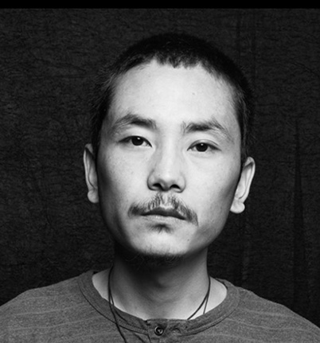

Tenzin Gyurmey Dorjee
Tibetians
My work celebrates the history and culture of the Tibetan diaspora in India through
intimate portrayals of my family, friends, and close relatives. Having been uprooted
from one's native home and then planted in a new society, our Tibetan culture has
become an amalgam of the past and present. We carry memories and fragments of our
history as we navigate the present that is steeped in modern western and Indian
influences.
I paint on tarp sacks, or Drochak-bhureh (barley sack) as the Tibetan diaspora call
them, because they are an inseparable part of my childhood in India. Given by the USA
to Tibetan refugees, these bhureh were an unmissable sight in Tibetan households,
schools, and factories alike. To me, this material bears testament to the way the
Tibetan diaspora has planted themselves in a new culture, and undergone changes in
their own culture. Through these works, I examine and celebrate the space we have
created for ourselves as Tibetans in India.

About the Artist
Tenzin Gyurmey Dorjee was born in 1987 in Kamrao village, Himachal Pradesh. He is
interested in exploring the paradoxes present in ordinary things in his life, focusing on
the concepts and associations simple objects can carry. By exploring a theme with different
mediums of expression, he tries to gain new insights about objects that were previously
mundane. Most of the subjects in his work are people who are close to him as family,
friends, or neighbors.
Most of his paintings are done on tarp sacks commonly known as "drochak bureh" in the
Tibetan community (drochak means barley and bureh means sack). As a refugee, most basic
food supplies come from USA aid in tarp sacks, and this material has been used for various
household purposes for quite a long period of time.
He was taught drawing in the Tibetan traditional style at the age of 6 by his father Tulku
Troegyal. He majored in science in Himachal Pradesh and then moved to Delhi for higher
studies. He has been practicing arts professionally since 2013. His studio practice is
currently based in Delhi.